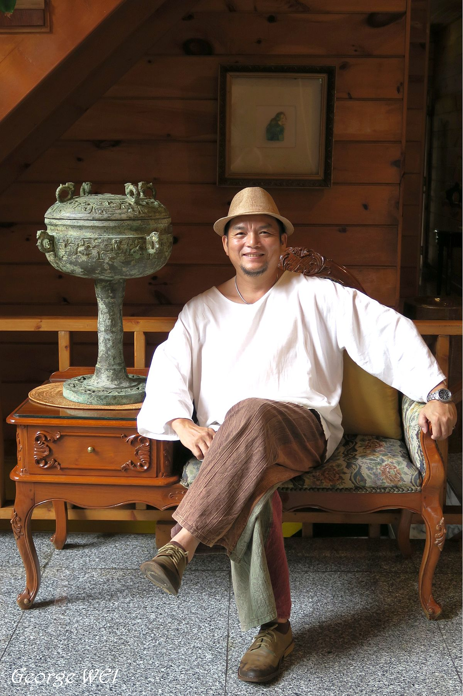
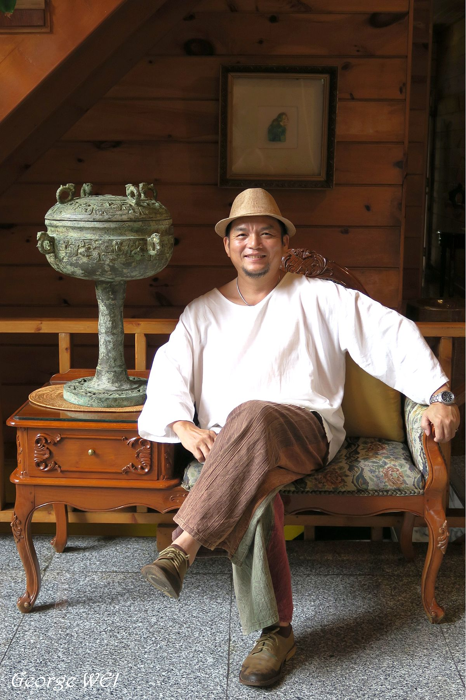

陳炳臣（Chen Ping-chen，1964年6月23日－），臺灣彰化縣芳苑鄉人。曾任導演，演員，藝術策展人，公共藝術製作藝術家，文化部諮詢委員，現為專職美術創作。從小就喜歡畫畫，學建築而踏進廣告圈，成為業界爭相合作的房地產行銷能人。愛爬山的他對於高山植物有獨到的觀察與表現，熱愛大自然使他在921地震後投入原生蘭藝的栽種復育，作品中可見許多以台灣特有種植物為主題的創作。
在台灣的千山萬水中領悟，關於這個世界的美，不是缺乏而是「發現」，進而探索於視覺藝術與表演藝術的領域，包含繪畫創作、電影的美術設計、舞台劇導演、及廣告演出等，同時辦理各式藝文活動，與大家一同分享與發現。多重角色交織出對生命的尊重與珍惜，使他與大自然的邂逅，幻化成氣勢宏大、細膩感動的創作。
陳炳臣的創作藉西方的媒材，表現東方的意境，運用色彩展現出深層的東方哲學思想。時而暈染、時而刮刷、時而以筆發揮，抽象與具象相互交錯，複雜線條中流露出單純的情感，於色塊的虛與實之間呈現豐富意境。畫面彩色斑斕、無邊無際，流露出對創作的狂熱，充滿著對生命的熱情。台灣官方邀請展及各藝術空間展覽多次，藏家給予很高的評價，為近年快速竄紅的當代藝術家。
2018年～至今 中華國際策展經紀交流協會常務理事
2013年～2016年社團法人台灣種子文化協會理事
2009年～2014年 新竹縣地方文化館「鄧南光影像紀念館」館長
2009年 台北市立美術館「假日親子廣場創作體驗活動」教案規劃討論會委員
2005年～2014年 桃園縣地方文化館「大溪藝文之家-公會堂及蔣公行館」館長
2003年～至今 原色畫會執行長
2001年～2013年 頑石劇團團長
2001年～2005年 在鐘俊雄畫室與鐘俊雄畫人體及戶外寫生
1985年～2001年 從事廣告、空間、景觀設計。曾主持中部多家大型建設公司廣告企劃行銷案；從產品定位至廣告企劃、廣告通路、製作執行。對平面、電子等媒體通路具多年經驗
藝術有愛-藝挺伯立歐」特展受彰化縣文化局邀請於「彰化縣立美術館」，作品《綠能》(30F)義賣捐贈彰化縣喜樂小兒麻痺關懷協會(2020/09/16-10/11)
「台灣當代一年展」(台灣視覺藝術協會)於花博公園爭艷館(2020/09/12-09/20)
「山林綠樹」陳炳臣創作個展於台北99°藝術中心(2020/07/02-07/28)
「蘭陽珍視愛禮兩岸三地邀請展」於宜蘭安永心食館(2020/06/12-09/02)
「蘭陽美術學會珍視愛禮交流展」於宜蘭縣文化中心(2020/05/20-06/07)
「台灣當代一年展」(台灣視覺藝術協會)於花博公園爭艷館(2019/08/31-09/08)
「桃園市美術教育學會會員聯展」受桃園市美術教育學會邀請於「桃園市客家文化館」(2019/08/03-08/27)
「2019蘭陽美術學會愜藝交流展」受蘭陽美術學會邀請於「宜蘭縣文化中心」(2019/05/24-06/04)
2014「台新銀行文化藝術基金會」 ，提名 ，臺北 ，臺灣
1999「裕隆金質獎」 ，入選 ，臺灣
1983「第八屆雄獅美術」 ，新人獎 ，臺灣